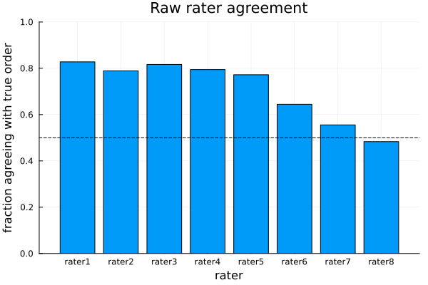
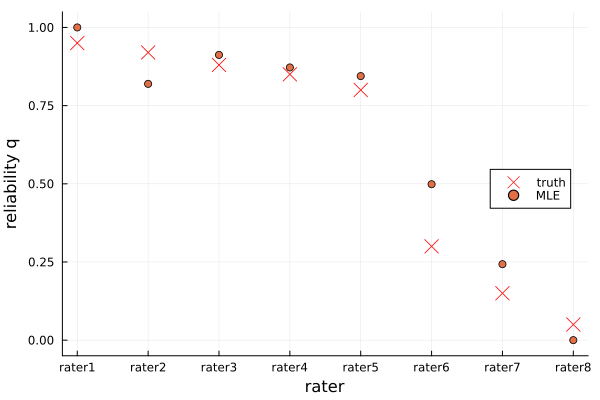
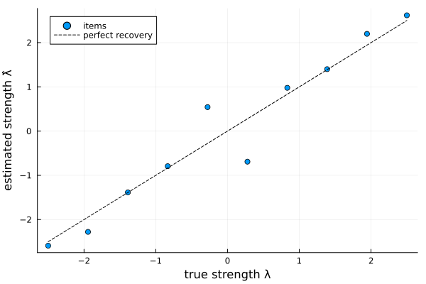
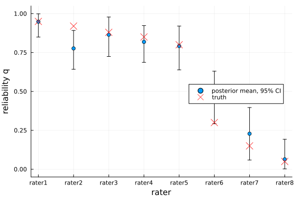

Rater-heterogeneity Bradley–Terry models
When comparisons are collected from many assessors of varying expertise and attention, treating every judgement as an equally reliable draw from one process is optimistic. The RaterHeterogeneity model is a mixture: rater $r$ follows Bradley–Terry with a reliability $q_r$ and otherwise guesses at random,
\[P(\text{rater } r \text{ judges } i \succ j) = q_r\,\sigma(\lambda_i - \lambda_j) + (1 - q_r)\tfrac{1}{2},\]
so a rater with $q_r = 1$ is a perfect Bradley–Terry judge and one with $q_r = 0$ is pure noise. Down-weighting unreliable assessors keeps them from distorting the common scale, and the estimated $q_r$ are themselves a quality-assurance signal. Setting every $q_r = 1$ recovers the plain Bradley–Terry model.
This page fits the model two ways on one simulated dataset:
- Maximum likelihood (
MLE) — point estimates of the strengths and reliabilities. The joint mixture likelihood is unbounded, so the fit adds a small ridge penalty on $\lambda$ (σ²λ). - Bayesian (
Bayesian) — a Gibbs sampler that augments each comparison with a latent informed/guess indicator, giving full posterior uncertainty for the strengths and reliabilities.
Simulating rater-tagged data
Unlike the aggregate PairwiseData, this model needs to know who made each comparison, so the data are individual judgements held in a RaterData. We simulate 10 items and 8 raters: five reliable ($q_r \approx 0.9$) and three close to random ($q_r \le 0.3$).
using ComparativeJudgement
using Random
rng = MersenneTwister(2025)
K = 10
M = 8
λ_true = range(2.5, -2.5; length=K) |> collect # planted strengths
q_true = [0.95, 0.92, 0.88, 0.85, 0.80, 0.30, 0.15, 0.05]
items = ["item" * lpad(i, 2, '0') for i in 1:K]
raters = ["rater" * string(r) for r in 1:M]
logistic(x) = 1 / (1 + exp(-x))
winners = String[]; losers = String[]; who = String[]
for r in 1:M, i in 1:K, j in (i + 1):K
for _ in 1:4 # 4 comparisons per rater per pair
p = q_true[r] * logistic(λ_true[i] - λ_true[j]) + (1 - q_true[r]) / 2
if rand(rng) < p
push!(winners, items[i]); push!(losers, items[j])
else
push!(winners, items[j]); push!(losers, items[i])
end
push!(who, raters[r])
end
end
rd = RaterData(winners, losers, who)RaterData takes, for each comparison, the winning item, the losing item and the rater (all by label); item and rater labels are inferred in order of first appearance. The raw agreement of each rater with the true order makes the two groups obvious — the reliable raters win-order cleanly, the noisy ones barely better than a coin:
using Statistics: mean
agree = zeros(M)
for c in 1:length(rd.winner)
r = rd.rater[c]
agree[r] += (λ_true[rd.winner[c]] > λ_true[rd.loser[c]]) ? 1 : 0
end
agree ./= [count(==(r), rd.rater) for r in 1:M]
using Plots
bar(raters, agree; legend=false, ylims=(0, 1), xlabel="rater",
ylabel="fraction agreeing with true order",
title="Raw rater agreement")
hline!([0.5]; color=:black, linestyle=:dash)
Maximum likelihood
fitted = fit(BradleyTerryRaterHeterogeneity(), MLE(), rd)
rater_reliabilities(fitted)(rater1 = 1.0, rater2 = 0.8196553204369009, rater3 = 0.9122174140029605, rater4 = 0.8720254450810391, rater5 = 0.844438024085762, rater6 = 0.49867604944588045, rater7 = 0.2429494181915751, rater8 = 2.1812008436372702e-17)rater_reliabilities returns $\hat q_r$ keyed by rater label: the five reliable raters land near one and the three noisy ones near zero. strengths recovers the latent scale (centred to sum to zero) and probability gives the consensus win probability $\sigma(\lambda_i - \lambda_j)$ — the latent-quality comparison, stripped of rater noise:
λ̂ = strengths(fitted)
(probability(fitted, "item01", "item02"), loglikelihood(fitted))(0.6031972669378471, -755.5969154616149)The estimated reliabilities track the truth, separating the two groups:
q̂ = collect(values(rater_reliabilities(fitted)))
scatter(1:M, q_true; marker=:x, markersize=7, color=:red, label="truth",
xticks=(1:M, raters), xlabel="rater", ylabel="reliability q",
ylims=(-0.05, 1.05), legend=:right)
scatter!(1:M, q̂; label="MLE")
And the recovered strengths track the (centred) truth along the diagonal:
λc = λ_true .- mean(λ_true)
scatter(λc, λ̂; label="items", markersize=4, legend=:topleft,
xlabel="true strength λ", ylabel="estimated strength λ̂")
plot!(identity, extrema(λc)...; linestyle=:dash, color=:black,
label="perfect recovery")
Bayesian inference
A Bayesian fit returns posterior draws of both the strengths and the rater reliabilities. The default prior is a NormalPrior on $\lambda$ and a uniform BetaPrior on each $q_r$; pass a RaterHeterogeneityPrior to change them.
method = Bayesian(n_samples=1500, n_burnin=500)
bayes = fit(BradleyTerryRaterHeterogeneity(), method, rd; rng=MersenneTwister(1))
rater_reliabilities(bayes)(rater1 = 0.9482618644449801, rater2 = 0.7764849369810554, rater3 = 0.8647765154484414, rater4 = 0.8184629107795518, rater5 = 0.7918165134117795, rater6 = 0.4648617591608783, rater7 = 0.22825149477847734, rater8 = 0.06354127215960184)Posterior summaries of the strengths come from posterior_mean, posterior_std and credible_interval, exactly as for the plain Bayesian fit (the raw draws are in bayes.result.λ_samples and bayes.result.q_samples):
(posterior_mean(bayes)[1], credible_interval(bayes, 1; prob=0.95))(3.1484309336463157, (2.3856274967857125, 4.060443186582332))The posterior reliabilities, with 95% credible intervals, again separate the reliable raters from the noisy ones:
using Statistics: quantile
qb = collect(values(rater_reliabilities(bayes)))
qlo = [quantile(bayes.result.q_samples[:, r], 0.025) for r in 1:M]
qhi = [quantile(bayes.result.q_samples[:, r], 0.975) for r in 1:M]
scatter(1:M, qb; yerror=(qb .- qlo, qhi .- qb), label="posterior mean, 95% CI",
xticks=(1:M, raters), xlabel="rater", ylabel="reliability q",
ylims=(-0.05, 1.05), legend=:right)
scatter!(1:M, q_true; marker=:x, markersize=7, color=:red, label="truth")